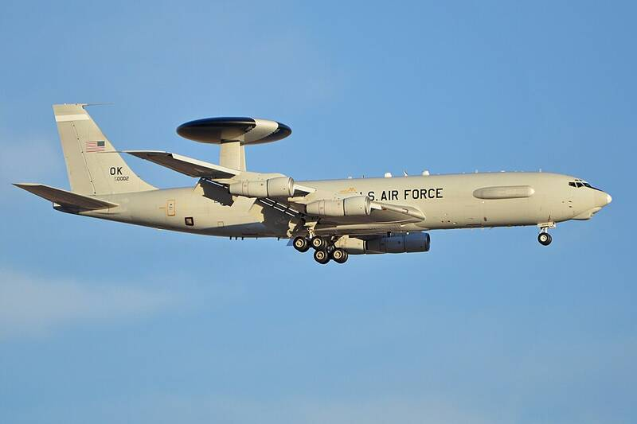

Tinker AFB Oklahoma Oklahoma · Military base · 35.415°N, 97.387°W An E-3B Sentry AWACS of Tinker's 552nd Air Control Wing. Photo: Alan Wilson, CC BY-SA 2.0 (source) Air Force maintenance and AWACS base. 1 Open in the interactive Watcher Sources Tinker Air Force Base Wikipedia